Los interruptores magnéticos de nivel IMN están basados en l acción de unos interruptores "reed" situados en el interior del tubo, que se activan mediante un imán alojado en el interior del flotador y que se desplaza debido al empuje del líquido.
Se emplean en aplicaciones donde se quiere detectar de uno a varios puntos de nivel en líquidos, para maniobras de llenado,vaciado, alarmas de sobrellenado, etc.
La mayoría se fabrican a medida para ajustarse a las condiciones de cada aplicación.
Ejecuciones con diferentes grados de protección:
Estandar: ejecución normal, sin relleno interno, la gran mayoría de aplicaciones.
Protegida: efecto anticondensación. En instalaciones donde existen grandes diferencias de temperatura.
Encapsulada: relleno con resina epóxica, establece un grado superior de estanqueidad.
IMN 40 INOX
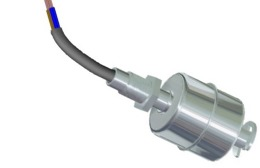
Para detección de un único punto de nivel en líquidos. Longitud: 40 mm (fija).
Conexión a proceso: Racor. 1/8" G. Inox AISI316 (14401)
Flotador: Cilíndrico ø29x32 mm.
Contactos: (NA) 40W/VA-2A/230VCA/CC. Invirtiendo flotador N.A o N.C.
Temperatura trabajo: -40..+125°C.
Densidad: 0,8 g/cm³.
Presión: 20 kg/cm².
Protección: IP65
IMN 70 INOX
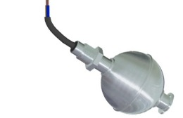
Para detección de un único punto de nivel en líquidos.
Conexión a proceso: Racor. 1/4" G. Inox AISI316 (1.4401).
Longitud: 70 mm (fija).
Flotador: Esférico ø52 mm.
Contactos: (NA) 120W/VA-3A/250VCA/CC. Invirtiendo flotador N.A o N.C.
Temperatura de trabajo: -40°C.+125°C.
Densidad: 0,7 g/cm³.
Presión: 30 kg/cm².
Protección: IP65.
IMN 50 NY V
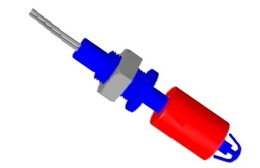
Para detección de un único punto de nivel en líquidos.
Conexión a proceso: Racor. Nylon. M16x2.
Longitud: 55 mm (fija).
Flotador: Cilíndrico ø21x30 mm. Nylon 6.6 o Polipropileno.
Contactos: (NA) 15W/VA-0,3A/250VCA. Invirtiendo flotador N.A o N.C.
Conexión eléctrica: Cable PVC.
Densidad: 0,7 g/cm³.
Temperatura de trabajo: -30..+60 ºC .
Protección: IP65.
IMN 50 INOX H
Para detección de un único punto de nivel en líquidos.
Montaje desde el interior del depósito, otros modelos montaje desde el exterior.
Conexión a proceso: Racor 1/8" G.
Conexión eléctrica: Cable Silicona.
Longitud: 82 mm (fija).
Contacto: 50W/VA 230 VCA 0,5A. Invirtiendo flotador N.A o N.C.
Temperatura de trabajo: -40..+120°C
Protección IP68.
Disponible en otros materiales Nylon, Polipropileno
IMN RP INOX
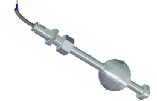
Para la detección de uno o varios puntos de nivel en líquidos.
Fabricación a medida.
Material: Inox AISI316.
Longitud: 90..3500 mm.
Conexión eléctrica: Cable de PVC/Silicona.
Conexión a proceso: racord 3/8"G - ½"G – ¾"G.
Nº contactos: 1…..5.
Temperatura: -40..+125ºC.
Protección: IP65.
Posibilidad de fabricar en otros materiales: PVC, PP, PVDF.
.
IMN TP INOX
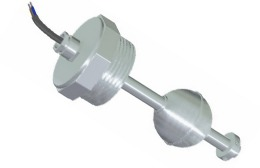
Para la detección de uno o varios puntos de nivel en líquidos.
Fabricación a medida.
Material: Inox AISI316.
Longitud: 90..3500 mm.
Conexión eléctrica: Cable de PVC/Silicona.
Conexión a proceso: tapón roscado 1" ½G –2"G.
Nº contactos: 1…..5.
Temperatura: -40..+125ºC.
Protección: IP65.
Posibilidad de fabricar en otros materiales: PVC, PP, PVDF.
IMN TC INOX
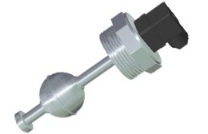
Para la detección de uno o varios puntos de nivel en líquidos.
Fabricación a medida.
Material: Inox AISI316.
Longitud: 90..3500 mm.
Conexión eléctrica: Conector DIN 43650.
Conexión a proceso: tapón roscado 1" ½G –2"G.
Nº contactos: 1…..5.
Temperatura: -40..+125ºC.
Protección: IP65.
Posibilidad de fabricar en otros materiales: PVC, PP, PVDF.
IMN TB PVC
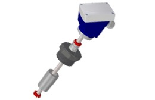
Para la detección de uno o varios puntos de nivel en líquidos.
Fabricación a medida.
Material: PVC.
Longitud: 90..3500 mm.
Conexión eléctrica: Caja conexiones PBT 64x95x110mm.
Conexión a proceso: tapón roscado 1"G, 1" ½G, 2"G.
Nº contactos: 1…3 (tubo 12mm) 1…5 (tubo 16mm).
Temperatura: -10..+60ºC (cuerpo) -20.+80ºC (cabezal)
Protección: IP67.
Posibilidad de fabricar en otros materiales: INOX, PP, PVDF
IMN BC INOX
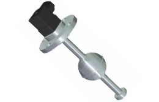
Para la detección de uno o varios puntos de nivel en líquidos.
Fabricación a medida.
Material: Inox AISI316.
Longitud: 90..3500 mm.
Conexión eléctrica: Conector DIN 43650.
Conexión a proceso: Brida ø80 mm. Inox AISI316
Nº contactos: 1…3
Temperatura de trabajo: -40..+125ºC
Protección: IP65
Posibilidad de fabricar en otros materiales: PVC, PP, PVDF
IMN BB PVC
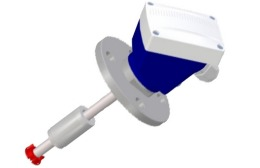
Para la detección de uno o varios puntos de nivel en líquidos
Fabricación a medida.
Material: PVC.
Longitud: 90..3500 mm.
Conexión eléctrica: Caja conexiones PBT 64x95x110mm.
Conexión a proceso: Brida ø120 mm. PVC.
Nº contactos: 1…3 (tubo 12mm) 1…5 (tubo 16mm)
Temperatura de trabajo: -10..+60ºC (cuerpo) -20.+80ºC (cabezal).
Protección: IP65.
Posibilidad de fabricar en otros materiales: INOX, PP, PVDF.
IMN DP INOX
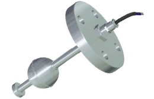
Para la detección de uno o varios puntos de nivel en líquidos.
Fabricación a medida.
Material: Inox AISI316.
Longitud: 90..3500 mm.
Conexión eléctrica: cable manguera PVC/silicona.
Conexión a proceso: Brida DN25, DN32, DN40, DN50, DN100
Nº contactos: 1…5
Temperatura de trabajo: -40..+125ºC
Protección: IP65
Posibilidad de fabricar en otros materiales: PVC, PP, PVDF
IMN TBEX INOX
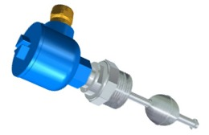
Para la detección de uno o varios puntos de nivel en líquidos.
Fabricación a medida.
Material: Inox AISI316.
Longitud: 100..3500 mm.
Conexión eléctrica: caja conexiones de aluminio.
Conexión a proceso: tapón roscado 2"G, 2" ½G, 3"G.
Nº contactos: 1…3
Temperatura de trabajo: -40..+125ºC.
Protección: IP65
Atex: equipo eléctrico simple, puede utilizarse en áreas clasificadas, como seguridad intrínseca, siempre que se utilice un aislador galvánico clasificado Atex.
IMN MPS
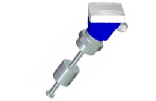
Interruptor de nivel configurable por el usuario.
Fabricado en Inox AISI316 (1.4401)
Conexión a proceso: Tapón roscado. 1"1/4..2"1/2 G.
Número de contactos:
1…5 con controlador SNIA y módulos MPS05
1…80 con controlador SIN y módulos MPS80
Flotador: Cilíndrico ø52x52 mm
Temperatura trabajo: -20…+60°C
Densidad: 0,55 g/cm³
Posibilidad fabricarlo en PVC y PVDF